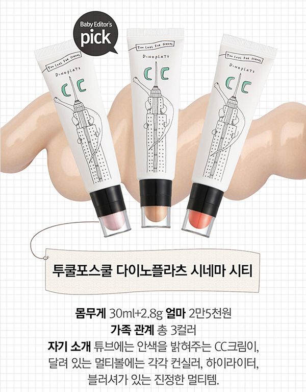
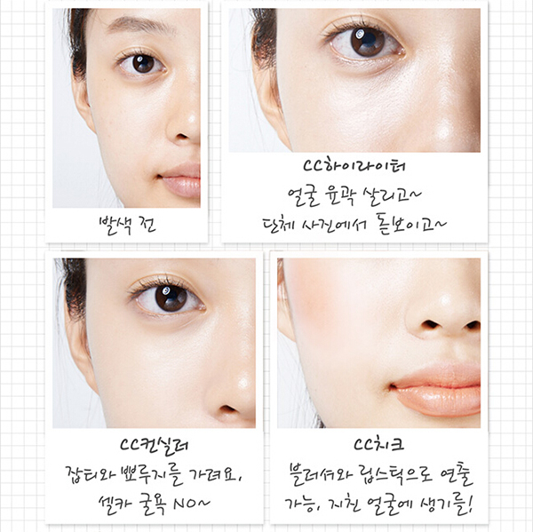
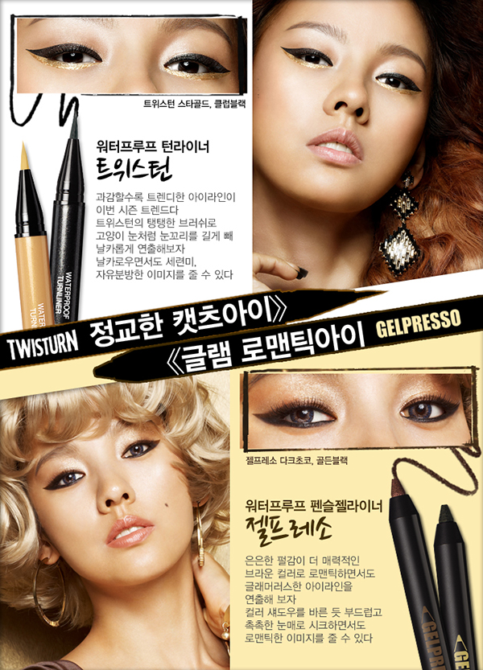
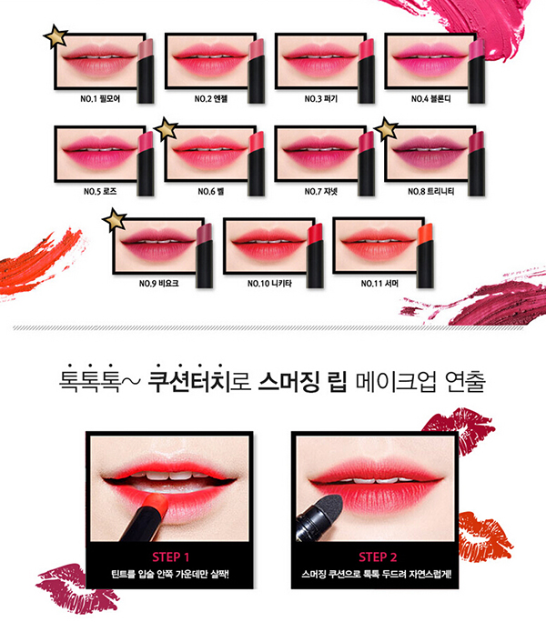

韩剧造型师最喜欢用的平价彩妆
大家比较熟悉的欧美彩妆师爱用品牌有M.A.C.、BOBBI BROWN、MAKE UP FOREVER等，今天小美要来推荐的是韩剧造型师爱用的韩国本土彩妆品牌。这些品牌的彩妆不仅更适合我们亚洲人的肤色，而且平价好用，特别适合喜欢韩系妆容的妹子噢~
TOO COOL FOR SCHOOL
年轻并具活力的化妆品牌，以“上学也很有派”作为品牌中心理念，经常推崇创新，一支百元的单品同时可具有3种功效，包装可爱性价比也很高！
恐龙广场多功能CC霜
这支CC霜超神奇的！底部管妆的CC霜除了水润皮肤还有控油光滑紧致皮肤的功效，最强大的是在管状的透明盖子上还有3种不同搭配，可以选择高光粉色的腮红、米色的遮瑕或浅粉色的高光，喜欢淡妆的话只需一支就能搞定完美妆容！


CLIO
由一群韩国顶级化妆师开发的品牌，他家的彩妆性价比高而且色号非常丰富，是韩国本土妹子常用的彩妆品牌。
防水眼线液笔
超级防水防油，12小时也不会晕妆~棕色的还能用来画眉毛

ARITAUM
爱茉莉太平洋集团是亚洲最大的化妆品公司，旗下有多个化妆品牌，其中ARITAUM自己的彩妆在韩国绝对是平价口碑又好的产品。
双头气垫唇膏
绝对是画咬唇妆的神器呐！一头是保湿度与显色都超赞的口红，另外一头是气垫海绵头，可以利用海绵头的延展性打造灰常有亲和力的咬唇妆。

以上介绍的这些彩妆全部在100元以下或百元左右，棒子国真是开价彩妆小天堂！亲们对自己好一点，呼唤姐妹们一起来买买买！